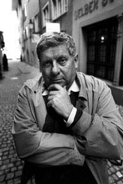

HUGO LOETSCHER
1929 yılında Zürih'te doğdu (Ölüm: 18 Ağustos 2009). Zürih ve Paris'te politik felsefe, iktisat tarihi ve edebiyat okudu. Yazarlığa. Neue Zürcher Zeitung gazetesinde edebiyat eleştirmeni olarak başladı. 1963 yılında yayınlanan ilk romanı Abwasser (Atık Sular) ile 1964'te Charles-Veillon Ödülünü aldı. 1981 yılında City University of New York'ta açılan ilk İsviçre Kürsüsünün başkanlığına getirildi. Loetscher, bir dönem İsviçre Yazarlar Birliği Başkanlığı da yapmıştır ve PEN-Club üyesidir. 1992 yılında Schiller Vakfı tarafından. tüm yapıtlarıyla Büyük Schiller ödülüne layık görülmüştür. 1996 yılı mayıs ayında. Ankara Alman Kültür Enstitüsünün, Ankara Kitap Fuarı çerçevesinde düzenlediği “Almancadan Türkçeye Çeviri Sorunları” başlıklı sempozyuma katılmış ve Uzay Kapsülündeki Maymun’da yer alan öykülerden bazılarını okumuştur. Başlıca eserleri: Der Immune (1975). Wunderwdt: Begegpung mit Brasilien (1979), Herbst in der Grossen Orange (1983), Die Papiere des Immunen (1986), Die Augen des Mandarin (1999), Bacchus (2004). Uzay Kapsülündeki Maymun (Die Fliege und die Suppe) 1989 yılında yayımlanmıştır.
MUSTAFA TÜZEL, 1959'da İstanbul’da doğdu. 1979 yılında İTÜ Elektrik Fakültesi Elektronik ve Haberleşme bölümüne girdi, 1991 yılında İÜ Basın Yayın Yüksek Okulu Radyo TV bölümünden mezun oldu. Çevirdiği eserlerden bazıları: 'İdeoloji' Olarak Teknik ve Bilim (Jürgen Habermas). Fizikçiler, Midas (Frıdrich Dürrenmatt), İnsanat Bahçesi Üzerine Kurallar (Peter Sloterdijk), Böyle Söyledi Zerdüşt, Tragedyanın Doğuşu (Friedrich Nietzsche), Afrika'da Felsefe (Heinz Kimmerle), Geleneksel ve Eleştirel Kuram (Max Horkheimer), Mahzen (Thomas Bernhard), Çocuklar, Gençlik ve Eğitim Üzerine (Walter Benjamin), Can Dostu (Martin Suter).